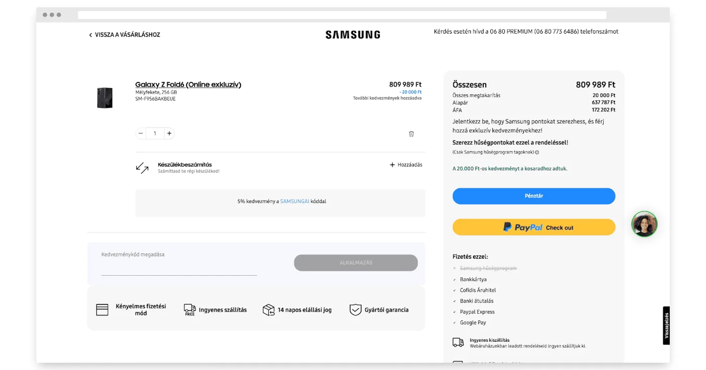
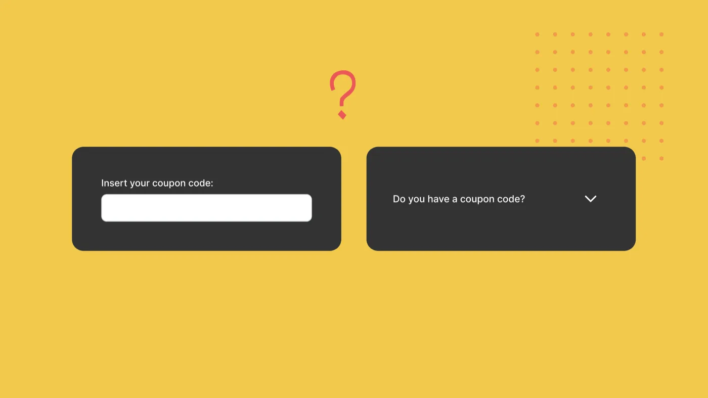
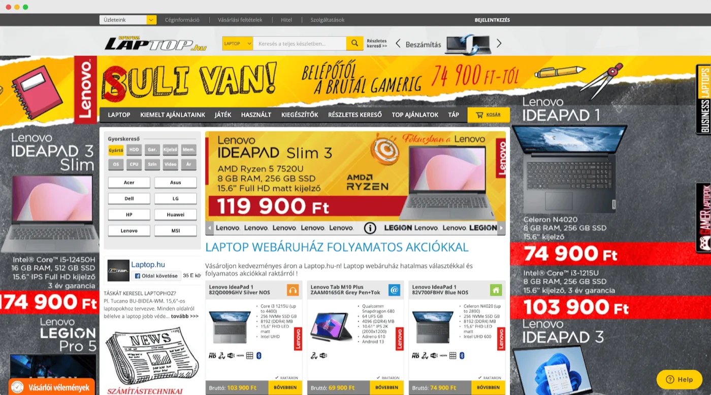
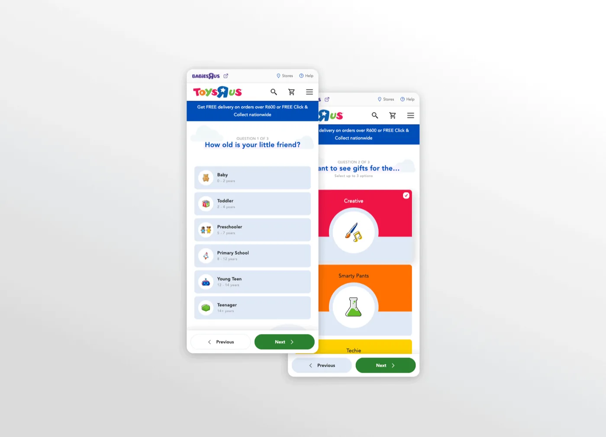
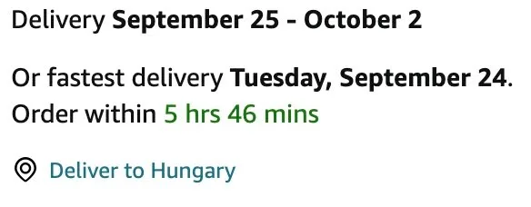

A karácsonyi időszak minden e-kereskedelmi vállalkozás számára kritikus időszak. Ilyenkor nem csak a forgalom ugrik meg, hanem a vásárlók elvárásai is az egekbe szöknek. Azonban a fokozott érdeklődés gyakran vezet magas kosárelhagyáshoz és rövid oldalelhagyási időhöz. Az alábbi 10+1 UX tipp segít abban, hogy a karácsonyi roham alatt maximalizáld a konverzióidat.
1. Legyen letisztult a checkout útvonal, itt már nem akarsz mást, csak hogy a rendelés teljesüljön

A checkout folyamatban minden felesleges elem csak zavaró tényező lehet. Távolítsd el az összes felesleges kattintható elemet, hogy a vásárlók figyelme csak a vásárlás befejezésére irányuljon. Egy egyszerű, egyértelmű útvonal csökkenti a kosárelhagyás esélyét.
Érdemes megvizsgálni a Samsung webshopjának Pénztár oldalát. Megfigyelhetjük rajta, hogy eltűnt a navigációs bar, majdnem kizárólag olyan kattintható elemek vannak rajta, amik a vásárlót továbblendítik a vásárlási folyamatban. Szintén érdemes megfigyelni, hogy ide is kitették a 4 legfontosabb USP-jüket ikonos formában. Ez nem véletlen.
2. Helyezd el diszkréten a kuponkód mezőt, ne ez világítson a legjobban
Ne helyezz el túlságosan jól látható kedvezménykód mezőt a checkout oldalon. Ez eltereli a vásárlók figyelmét a vásárlás befejezéséről, és bizonytalanná teheti őket a döntésükben – esetleg nekiállnak kuponkódokat keresni a Facebookon vagy egyéb helyeken, és már el is vesztetted őket. Az internet tengerében ugyanis mindenki arra játszik, hogy elterelje a user figyelmét. Jobb módok is vannak a promóciók eljuttatására az új és meglévő vásárlókhoz, például kampány URL-ek használata.

Bónusz tipp: Egy alkalommal érdemes kiemelni a kuponkód mezőt. Ha épp erre futtatsz kampányt és mindenkit szórsz kedvezménykóddal lépten nyomon. 😉
3. A túlzsúfolt főoldal vagy kategóriaoldal megijeszti a felhasználót, törekedj a letisztult megjelenésre
A túl sok tartalom könnyen zavaró lehet, különösen akkor, amikor a vásárlók gyors döntést szeretnének hozni. Fókuszálj a lényegre, és használj egyértelmű, könnyen emészthető szövegeket. A letisztult információs architektúra segíti a vásárlókat abban, hogy gyorsan megtalálják, amit keresnek.
4. Az accessibility mindenkinek fontos
Biztosítsd, hogy az oldalad jól látható, egyszerű és könnyen érthető legyen minden felhasználó számára. Nagy kontrasztú színek, nagy betűméretek és egyértelmű navigáció mind hozzájárulnak a jobb felhasználói élményhez.
Pro tipp: Használd a WebAIM kontrasztellenőrzőjét a gombjaid és call-to-actionjeid háttér- és betűtípus színeinek ellenőrzéséhez.
5. Kevesebb CTA, több fókusz
Túl sok cselekvésre ösztönző (CTA) elem könnyen zavaró lehet. Válaszd ki a legfontosabbakat, és helyezd őket stratégiai helyekre, hogy a vásárlók figyelmét ne ossza meg túl sok opció.

A laptop.hu oldalán például nagyon nehéz eldönteni, hogy hova is kéne indulnom vásárlóként.
6. Segíts a vásárlóknak a döntéshozatalban
A karácsonyi időszakban a vásárlók gyakran tanácstalanok az ajándékok kiválasztásában. Könnyítsd meg a döntést egy „Ajándékötletek” kategória létrehozásával, amelyben előre összeállított csomagokat, népszerű termékeket vagy különböző árkategóriák szerinti ajánlásokat kínálsz.

A fenti képen a Toys R Us webshopjának ajándékkereső varázslóját láthatjuk. Az ilyen varázslók célja, hogy megkönnyítsék a vásárlóknak a szűrést, mindezt ráadásul sokkal kényelmesebben, mintha egy szűrő oldalsávban kellene keresgélni és pipálgatni.
7. USP-k kiemelése minden oldalon
A Unique Selling Pointok (USP), mint például az ingyenes szállítás, visszafizetési garancia vagy a biztonságos fizetés, minden fontos ponton legyenek láthatóak: a főoldalon, a termékoldalon és a checkout során is. Ezek az elemek növelik a vásárlók bizalmát és segítenek a vásárlás befejezésében.
Miért fontos ez?
A látogatóid nagy része nem biztos, hogy a főoldaladra érkezik. Sokan a keresési találatokból egyből egy termék- vagy termékkategória-oldalon találják magukat, ezért fontos, hogy azok a bizalmat építő üzenetek, amelyek segítik a döntéshozatalt, minden aloldaladon megjelenjenek.
8. Szállítással kapcsolatos félelmek kezelése
A karácsonyi időszakban a vásárlók egyik legnagyobb aggodalma a szállítás. Helyezz el notification bart a főoldalon és a termékoldalakon, amely garantált kiszállítást ígér X napon belül. Emellett a checkout oldalon is hangsúlyozd, hogy a megrendelés időben megérkezik.
Bónusz tipp: Ha egzakt dátumot tudsz írni, még jobb. Pl.: „A megrendelésed november 9-10. között fog megérkezni.” (Amazon)

9. Gyors oldalbetöltés
Az oldal túlterhelése a megnövekedett forgalom miatt lassabb betöltődési időt eredményezhet. Optimalizáld az oldaltöltési időt, hogy a vásárlók ne hagyják el az oldalt, mielőtt befejeznék a vásárlást. Egy gyors, zökkenőmentes élmény növeli a felhasználók elégedettségét.
A Google PageSpeed Insights eszköz segít az oldalad teljesítményének felmérésében. Gyakran olyan hibákra világít rá a jelentés, amelyeket te vagy a fejlesztőd gyorsan tudtok orvosolni. Ezek jellemzően: nem használt vagy túl nagy beágyazott scriptek, túl nagy képfile-ok a landing pagen.
10. Bizalomépítés minden szinten
A vásárlók számára a bizalom kulcsfontosságú tényező a vásárlási döntés meghozatalában. Az urgency bias és a sürgetés helyett inkább helyezd előtérbe a vásárlói visszajelzéseket és ajánlásokat. Mutasd meg a potenciális vásárlóknak, hogy mások is elégedettek voltak a termékeiddel és szolgáltatásaiddal. Helyezz el vásárlói értékeléseket, csillagokat vagy akár valós vásárlók által készített képeket és véleményeket az oldalaidon. Ez növeli a hitelességedet és segít meggyőzni a bizonytalan látogatókat is.
Bónusz tipp: Használj megbízható értékelési rendszereket, mint például a Trustpilot vagy a Google Értékelések, amelyek hitelesítik a vásárlói véleményeket.
10+1. Tartsd naprakészen a készletinformációkat és az elérhetőséget
Semmi sem rontja el jobban a vásárlói élményt, mint amikor egy terméket megrendelnek, majd később kiderül, hogy az nincs készleten vagy nem érkezik meg időben. Gondoskodj arról, hogy a készletinformációk mindig pontosak legyenek, és a termékoldalakon egyértelműen jelezd a termék elérhetőségét és a várható szállítási időt. Ha egy termék hamarosan elfogyhat, jelezd ezt diszkréten, hogy a vásárlók tudják, sietniük kell a rendelés leadásával.
Ezzel nem csak a vásárlói elégedettséget növeled, hanem csökkented a későbbi panaszok és visszatérítések számát is.
A karácsonyi időszak hatalmas lehetőségeket rejt az e-kereskedelmi vállalkozások számára, de csak akkor tudod maximálisan kihasználni, ha a felhasználói élményed is csúcsformában van. A fenti 10+1 UX tipp segítségével nem csak a konverzióidat növelheted, hanem hosszú távon is elégedett vásárlói bázist építhetsz ki. Ne feledd, a cél nem csak az egyszeri vásárlás, hanem az, hogy a vásárlók visszatérjenek hozzád a karácsonyi szezon után is.
Kellemes ünnepeket és sikeres értékesítést kívánunk! 🙂
Lukács Áron a 22.design-tól.